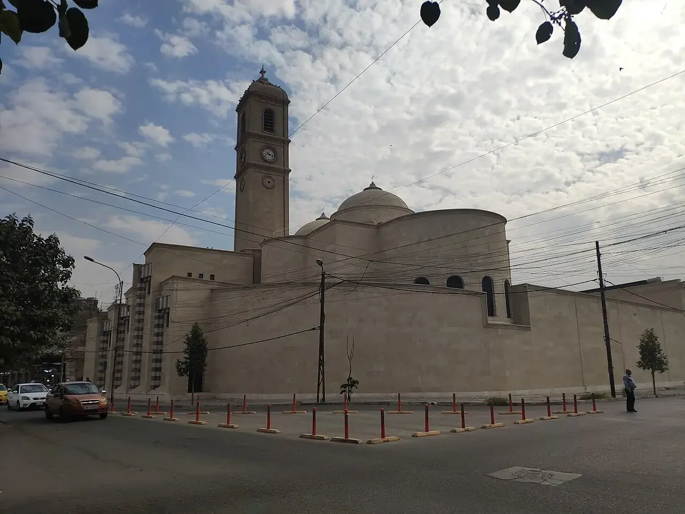
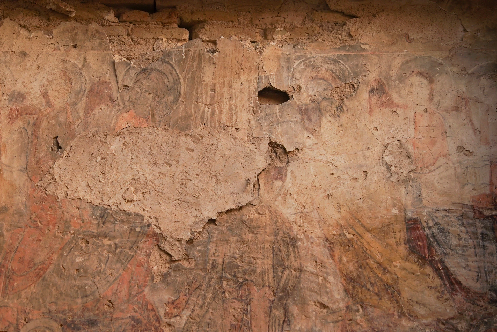
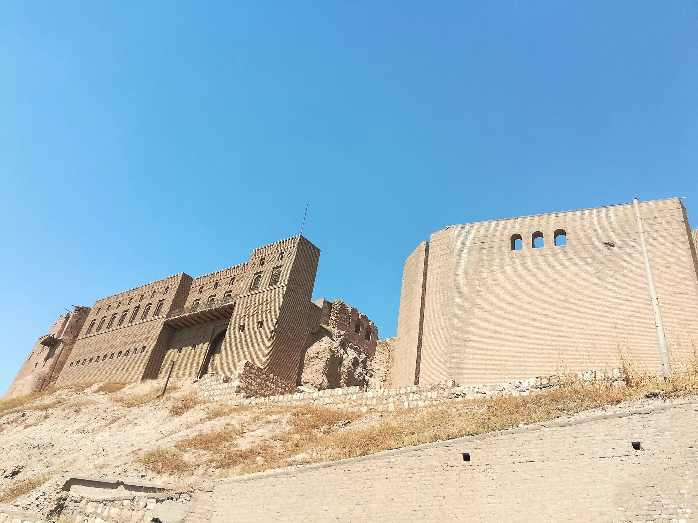

아직 펼치지 않은 카드흩어지고 사라질 뻔한 책 · 6나지브 미카엘 신부의 책 상자무장 세력이 다가오던 밤, 한 수도사가 차 트렁크에 옛 손글씨 책 상자를 싣고 떠났어요. 검문소에서 차가 막히자 그는 어떻게 했을까요?아주 오래된 책을 지키려고 한 신부님이 먼 길을 떠났대.
2014년 8월 6~7일 밤이라크 카라코시 → 칼라크 검문소 → 아르빌
나지브 미카엘 신부의 책 상자
2014년 8월 6일 밤, 이라크 카라코시의 도미니코회 수도사 나지브 미카엘은 남은 필사본 상자를 싣고 아르빌로 떠났어요. 닫힌 칼라크 검문소에서 차가 막히자, 그는 빈손으로 걷는 피란민들에게 상자를 하나씩 맡겼어요. 지도 위에서 상자들이 간 길을 따라가 보세요.
오래된 책 상자를 지키던 신부님이 있었어. 차가 더 갈 수 없게 되자, 걸어가는 사람들에게 상자를 하나씩 맡겼대. 그 길을 따라가 볼까?
검수 전 시안이에요(기준서 1판). 지도는 이 안내서가 그린 길잡이 그림이에요. 검문소의 일은 나지브 신부와 함께 있던 사람의 증언에 기대요. 기록마다 조금씩 달라서 ‘기록마다 다른 점’에 모았어요. 장면에는 기록에 있는 것만 옮겼고, 상상은 ‘눈 감고 상상해 보기’에만 썼어요.
시안 확인용카드 단계 미리 보기
1
시계 성당의 기록실
모술의 도미니코회 성당은 ‘시계 성당’(알사아)이라고 불려요. 1880년 프랑스가 도미니코회의 사회·문화 활동을 기려 선물한 시계에서 온 이름이에요(AFP 2018). 수도원 도서관은 이탈리아 도미니코회 수도사들이 모술에 자리 잡은 1750년에 생겼어요(레 클레 뒤 모아양오리앙).
기록은 2007년까지 이 성당 안에 있었어요. 아람어·아랍어 등 여러 말로 쓴 옛 필사본 850권쯤, 몇백 년 된 편지들, 그리고 책 5만 권쯤이었어요(아시아뉴스 · AFP 2018). 필사본은 손으로 베껴 쓴 책이에요.
1988년부터 이 기록을 맡은 나지브 미카엘은 1990년, 필사본을 사진으로 찍어 남기는 ‘동양 필사본 디지털 센터(CNMO)’를 세웠어요(위키백과 · AFP 2018). 2009년부터는 미국 베네딕도회의 필사본 도서관 HMML이 장비와 기술자 교육을 도왔어요(HMML).
2018년 기사에는 시계를 달았던 탑이 무너졌다고 적혀 있어요(아시아뉴스). 사진은 2024년의 시계 성당이에요.
모술에 시계탑이 있는 성당이 있어. 그 안에 아주 오래된 손글씨 책이 많았대.
물어보기시계 성당이라는 이름은 어디서 왔을까?
2
카라코시로 옮긴 기록
모술이 위험해지자 기록은 남동쪽으로 30km쯤 떨어진 카라코시로 옮겨졌어요(위키백과). 카라코시는 바크디다라고도 부르고, 한때 이라크에서 가장 큰 기독교 도시였어요(AFP 2018).
2014년 6월, 이슬람국가(IS)가 모술을 차지했어요(알레테이아). 7월 말, 수도사들은 ‘예감’이 들어 기록의 큰 부분을 먼저 트럭에 실어 70km쯤 떨어진 아르빌로 보냈어요(AFP 2015 · AFP 2018).

8월 7일 IS가 카라코시에 들어왔고, 2016년 10월 19일까지 그곳을 차지했어요(알레테이아 · 위키백과). 그해 11월 그는 카라코시로 돌아가 남은 것을 찾았지만, 남겨 두었던 문서들은 짓이겨져 있었어요(알레테이아).
사진은 바로 그 2016년 11월 12일, 바크디다의 부서진 교회 벽이에요. 머리에 둥근 테를 두른 사람들의 벽화가 희미하게 남아 있어요(위키미디어 공용 사진 정보).
신부님은 책 상자를 카라코시라는 마을로 옮겼어. 그런데 그곳도 위험해졌어.
물어보기위험할 때, 무엇부터 먼저 옮겨야 할까?
3
닫힌 칼라크 검문소
8월 6일 밤, 쿠르드 군대가 기독교 마을들에서 물러났어요. 사람들은 자다가 깨어 ‘들 수 있는 것만 들고 아르빌로 가라’는 말을 들었어요. 그날은 그리스도인들이 예수의 모습이 산 위에서 빛나게 바뀐 일(마태복음 17장 1~8절)을 기념하는 축일이었어요(HMML).
나지브 신부는 동료 사제 둘과 함께 남은 기록을 차에 싣고 떠났어요(루다우 2014). 그러나 쿠르드 지역으로 들어가는 칼라크 검문소는 닫혀 있었어요. 사람은 지나갈 수 있었지만, 차는 지나갈 수 없었어요(나지브 신부의 편지 · 루다우 2014).
아래에서 ‘다음 곳으로’를 눌러, 기록이 모술에서 아르빌까지 간 길을 따라가 보세요.
‘다음 곳으로’를 눌러 기록이 간 길을 따라가 보세요.
모술카라코시칼라크 검문소아르빌
지도는 이 안내서가 그린 길잡이 그림이에요(실제 거리와 다를 수 있어요).
상자들이 모두 아르빌에 닿았어요. 카라코시에서 아르빌까지는 70km쯤이에요(AFP 2015).
“그래서 나는 차에서 필사본 상자를 꺼내, 지나가는 사람들에게 건네기 시작했어요.”
나지브 미카엘 · 알레테이아(2017)에 실린 영어 원문을 이 안내서가 옮김
그는 빈손인 사람이 보일 때마다 상자를 맡기며, 쿠르드 지역에 닿으면 돌려 달라고 부탁했어요(AFP 2018). 수도회 일을 돕던 와테크 카사브는 그에게 “나지브, 그 기록들 때문에 우리 다 죽게 생겼어!”라고 했지만, 그도 상자 여섯 개를 들고 걸었어요(AFP 2015 · 이 안내서가 옮김).
8월 10일, 그는 아르빌에서 쓴 편지에 그날을 이렇게 적었어요. “수천 대의 차가 줄줄이 서 있었어요. 남자와 여자, 아이들과 겁에 질린 노인들을 가득 태운 채, 닫힌 칼라크 검문소에 막혀서요.”(칼리지빌 연구소에 실린 영어 옮김을 이 안내서가 옮김)
차가 더 갈 수 없게 되자, 신부님은 걸어가는 사람들에게 상자를 하나씩 맡겼어.
물어보기모르는 사람이 상자를 맡기면, 너는 끝까지 들고 갈 수 있을까?
4
모두 돌아온 상자
그 밤 사람들은 40km쯤을 걸어 아르빌에 닿았고, 상자들도 모두 아르빌에 닿았어요(루다우 2014 · 알레테이아). 수도사들은 아르빌의 기독교인 동네 안카와의 한 집에 다시 자리를 잡았어요(HMML).
센터도 아르빌에서 다시 일을 시작했어요. 피란 와서 일자리를 잃은 학자 10명쯤이 일하는데, 그리스도인과 무슬림이 함께예요. 필사본은 여러 벌로 옮겨 찍어 원본은 주인에게 돌려주고, 한 벌은 보관하고, 한 벌은 온라인 자료실에 올려요(AFP 2018).
사진은 2025년의 아르빌 성채예요. 그날 상자를 맡긴 일을, 그는 나중에 이렇게 말했어요.

“나는 모든 것을 돌려받았어요.”
나지브 미카엘 · AFP(2018, 걸프 뉴스·루다우 실음)의 영어 원문을 이 안내서가 옮김
상자들이 하나도 빠짐없이 다 돌아왔대!
물어보기상자를 돌려준 사람들은 어떤 사람들이었을까?
눈 감고 상상해 보기
2014년 8월 7일 새벽, 칼라크 검문소 앞. 끝없이 늘어선 차들의 불빛과 웅성거리는 소리. 그는 트렁크에서 상자 하나를 꺼내 들고, 빈손으로 걷는 사람에게 내밀어요. 상자를 받아 든 손이 어둠 속으로 걸어가요.
눈을 감아 봐. 깜깜한 밤, 차들이 길게 줄 서 있어. 신부님이 상자를 하나 건네. 상자를 받은 사람이 함께 걸어가.
나의 자리
처음 보는 사람 손에 상자를 건넬 때, 그는 무엇을 믿었을까요?
모르는 사람에게 소중한 상자를 맡길 때, 신부님은 어떤 마음이었을까?
마음에 닿는 한 줄을 고르거나 직접 써 보세요. 한 줄을 남기면 이 자리의 도장이 찍혀요. 이 기기에만 저장돼요.
더 깊이
궁금한 칸만 펼쳐 읽어도 괜찮아요.
알고 보면
함께 구한 책 바그다드의 칼데아 가톨릭 총대주교청 필사본도 2013년부터 카라코시에 옮겨져 있었는데, 그 밤의 혼란 속에서 함께 구해 냈어요(HMML 2014). 센터는 장비 대부분을 카라코시에 두고 나왔지만, 필사본과 기록, 사진기는 챙겼어요(HMML 2015).
사진으로 남긴 필사본 센터는 북이라크의 교회와 마을에서 찾은 상한 필사본을 받아 사진으로 남기고 고쳐서 돌려줘요. 칼데아·시리아·아르메니아 교회 등의 필사본 8,000권쯤을 디지털로 옮겼어요(AFP 2018). 그 가운데 5,000권쯤의 사진은 미국 HMML에도 안전하게 보관돼 있어요(HMML 2015).
파리의 일곱 권 구한 필사본 가운데 일곱 권의 정밀한 복제본이 2015년 5월 20일부터 8월 24일까지 파리 국립기록원의 전시 「메소포타미아, 문화의 교차로」에 나왔어요(레 클레 뒤 모아양오리앙 · AFP 2015).
기록마다 다른 점
검문소에서 누가 막았을까 알레테이아(2017)·AFP(2015)·루다우(2014)는 쿠르드 군대 페슈메르가가 사람은 보내고 차는 막았다고 적어요. AFP(2018)는 IS 무장 세력이 칼라크 갈림길에서 막으려 했고 페슈메르가가 끼어들었다고 적어요.
어떤 차였을까 알레테이아는 그의 차 트렁크로, 루다우는 동료 사제 둘을 태운 픽업트럭으로 적어요.
몇 권이었을까 AFP(2015)와 위키백과는 8월에 옮긴 필사본을 800권쯤(13~19세기)으로, AFP(2018)와 아시아뉴스는 기록 전체를 850권쯤으로 적어요. 카라코시로 옮긴 해는 위키백과가 2007년, 알레테이아가 2008년이에요.
전시는 몇 해였을까 앞면과 알레테이아는 파리 국립기록원 전시를 2016년으로 적었지만, 전시는 2015년 5월 20일부터 8월 24일까지였어요(레 클레 뒤 모아양오리앙 · AFP 2015).
상자가 간 길 금박
지도 위 길을 모술에서 아르빌까지 따라가면 카드에 금박이 입혀져요.
모술에서 아르빌까지 길을 따라가기
아이와 함께 채색
아이와 함께 ‘영화처럼 보기’를 끝까지 보면 카드가 채색돼요.
아이와 함께 ‘영화처럼 보기’를 끝까지 보기
근거 보기 (13)
- 나지브 미카엘의 편지(아르빌, 2014년 8월 10일) · 칼리지빌 연구소(프랑스어 원문을 영어로 옮김) — 닫힌 칼라크 검문소에 막힌 수천 대의 차, 그날 본 것, 쿠르드 군대가 물러난 새벽
- 알레테이아(2017): Iraqi priest protects ancient Christian manuscripts from ISIS — 2008년 카라코시로, 2014년 6월 모술, 8월 7일 카라코시, 트렁크의 상자, 페슈메르가가 차를 막음, 상자를 지나가는 사람들에게 건넴, 모두 아르빌에 닿음, 2016년 11월 돌아가 짓이겨진 문서
- AFP(2015) · 탕당스 우에스트: 800 manuscrits — 와테크 카사브의 말과 상자 여섯 개, 페슈메르가가 지켰지만 차는 막음, 상자를 지나가는 사람들에게 맡김, 7월 말 트럭으로 70km 아르빌, 13~19세기 800권, 국립기록원 일곱 권(8월 24일까지)
- AFP(2018) · 걸프 뉴스: Friar saves religious manuscripts from Daesh’s wrath — 한때 이라크에서 가장 큰 기독교 도시, 7월 말의 ‘예감’, 칼라크 갈림길, 빈손인 사람들, ‘나는 모든 것을 돌려받았다’, 850권, 센터(1990년), 직원 10명쯤·그리스도인과 무슬림, 여러 벌 사본, 8,000권
- AFP(2018) · 루다우: Friar trains Iraqis to preserve ‘treasures’ — 알사아 성당의 시계(1880년 프랑스의 선물), 칼라크 갈림길, 빈손, 돌려받음
- 루다우(2014년 11월 1일): 필사본을 숨긴 곳 — 8월 6일 밤 3만 명쯤과 40km를 걸음, 동료 사제 둘과 픽업트럭, 아르빌 밖 페슈메르가 검문소(사람은 보내고 차는 막음)
- HMML 소식지 Illuminations(2014년 가을) · 콜룸바 스튜어트: HMML in Iraq — 8월 6일 밤 주님의 변모 축일, 잠에서 깨어 들 수 있는 것만, 도미니코회 필사본과 칼데아 총대주교청 필사본을 구함, 안카와의 집, CNMO
- HMML(2015년 3월 17일): HMML urgently working to save manuscripts in Iraq — 2009년부터 함께 일함, 장비·기술자 교육, 2013년 칼리지빌의 석 달, 장비는 두고 필사본·기록·사진기를 챙김, 5,000권의 사진
- 아시아뉴스(2018년 3월 17일): One Iraqi Dominican’s mission — 2007년까지 알사아 성당 안의 기록, 850권·편지·책 5만 권, 시계를 달았던 탑이 무너짐
- 레 클레 뒤 모아양오리앙: 「메소포타미아, 문화의 교차로」 전시(파리 국립기록원, 2015년 5월 20일~8월 24일) — 1750년 이탈리아 도미니코회와 함께 생긴 모술 도서관, 일곱 권의 복제본, 1990년 센터와 8,000권
- 영어 위키백과: Najib Mikhael Moussa — 길잡이로만(1988년 기록 담당, 1990년 센터, 2007년 카라코시, 8월 6~7일 밤 아르빌로, 800권 13~19세기)
- 영어 위키백과: Bakhdida — 길잡이로만(모술 남동쪽 32km, 8월 6일 쿠르드 군대가 물러나고 이튿날 IS, 2016년 10월 19일까지)
- 위키미디어 공용 사진 정보: 시계 성당(2024년) · 바크디다의 부서진 교회 벽(2016년 11월 12일) · 아르빌 성채(2025년)
그림·사진·소리 출처
‘처음 만나는 기독교 문화’의 깊은 카드예요. 카드 단계와 남긴 글은 이 기기에만 저장돼요.